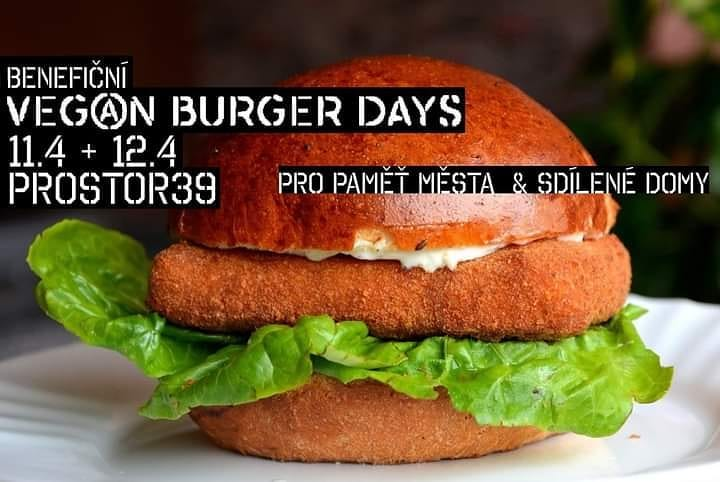

Vyprážaný syr podľa @vegan_burger_days — Normy Jedál
ZA TÝDEN se vidíme před prostorem39 a nebo u vás v práci/doma na šestejch VEGAN BURGER DAYS! Vzhledem k krásnýmu počasí posouváme otevíračku i na neděli přes den.
VEGANSKEJCH SMAŽÁKŮ bude celkem 250 kusů, na každý den 125 ks. Smažáky nejsou ideální na rozvoz, ale pokud chcete, tak vám je rádi zašlem. Na smažák bude čekačka o něco delší, než na burger. Díky za pochopení!
Nemáte rádi veganskej sejra? Nevadí, máme v nabídce 4 burgery, jako vždy!
Opět máme rozvoz burgerů až domů/do práce. PROSÍME, OBJEDNÁVEJTE DO 10.4. Nemůžeme garantovat kapacitu na rozvoz během akce samotné. Díky!
#foodnotbombs #fnb #foodisrightnotaprivilege #solidarity #solidaritynotcharity #zizkov #žižkov #praha3 #prostor39 #veganskerecepty #veganskehody #veganskejidlo #veganske #veganburgerdays #foodporn #vegan #veganburger #veganburgers #jidlojelaska #jidlojezaklad #pametmesta #sdilenedomy
#smazak #smazenysyr #vyprazanysyr #veganskysyr